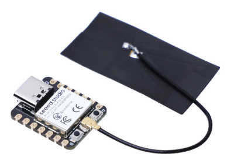

Espressif ESP32-C3 Series
These are the firmware images:
- ESP32_C3_REVx that fits all ESP32-C3 boards. These can be ESP32-C3 DevKits, ESP32-C3 Modules and others with or without PSRAM. The revision suffix will depend on the device. There are two versions available REV2 and REV3. The latter is valid for revision 3 and 4 devices.
You can check Espressif Product Selector for details on all the existing variants, chips, modules and respective development kits.
ESP32-C3-DevKitM-1

ESP32-C3-DevKitM-1 Product page
ESP32-C3-DevKitC-02

ESP32-C3-DevKitC-02 Product page
Seeed Studio XIAO ESP32C3

Seeed Studio XIAO ESP32C3 Product page
Firmware images (ready to deploy)
| Target | Firmware |
|---|---|
| ESP32_C3_REV2 | |
| ESP32_C3_REV3 | |
| XIAO_ESP32C3 |